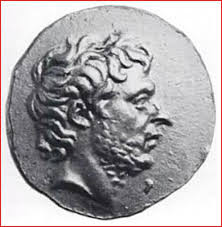

| |
Gaius Flaminius
Gaius Flaminius was a Roman consul in 187 BC together with Marcus Aemilius Lepidus and he was also a Roman political leader who was one of the earliest to challenge the senatorial aristocracy by appealig to the people.He was the first in his family to hold the elective office.He earned people support by allocating plots of lands to people of Roman Republic in an area on the east coast in Italy,which Romans had conquered 50 years earlier from Senones.Elected praetor in 193 BC he was given Hispania Citerior as his province where he carried on a successful war by besiegeing and capturing wealthy town of Litabrum.

Gaius Flaminius
For
more information please visit :
More Information about Gaius Flaminius from Wikipedia
| |
|
|